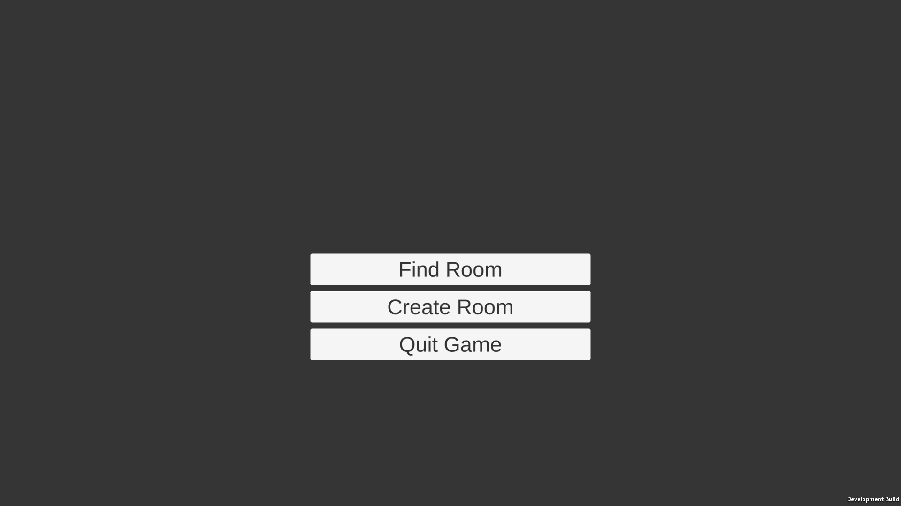
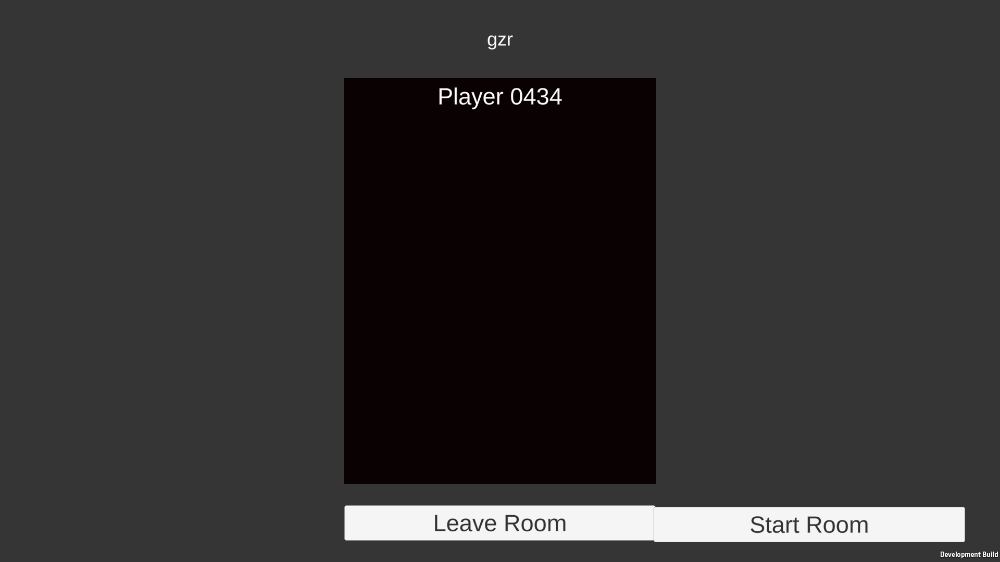

Le menu principal
Pour jouer en multijoueurs nous avions d'abord besoin que les joueurs puissent se rejoindre et se connecter à un même serveur. Nous avons dpnc réalisé un menu primitid permettant de créer ou rejoindre une salle de jeu.

Le lobby
Arrivés à cette étape nos joueurs peuvent rejoindre une même salle ou en créer une mais rien de plus. Nous avons rapidement mis en place un script permettant de passer des menus à la scène principale du jeu.
